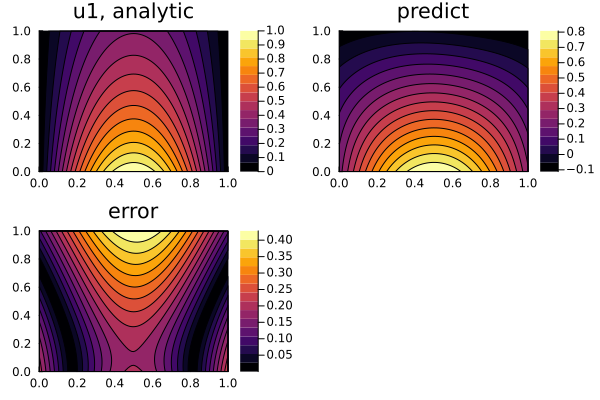
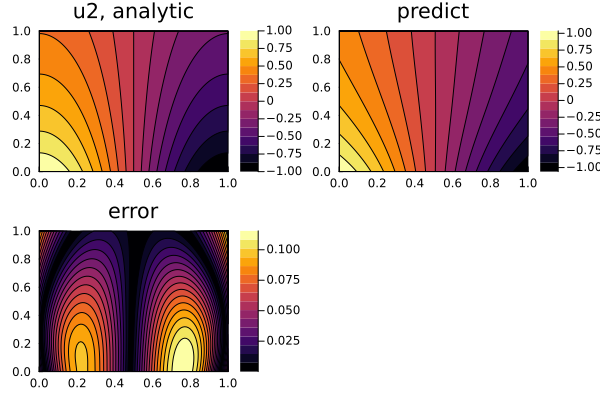
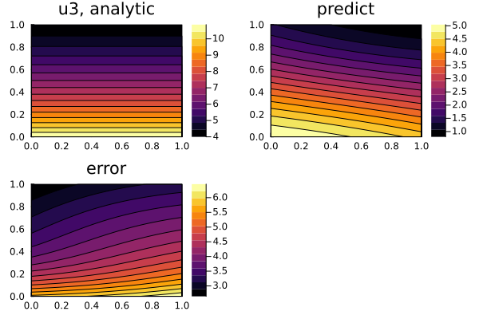

Defining Systems of PDEs for Physics-Informed Neural Networks (PINNs)
In this example, we will solve the PDE system:
\[\begin{align*} ∂_t^2 u_1(t, x) & = ∂_x^2 u_1(t, x) + u_3(t, x) \, \sin(\pi x) \, ,\\ ∂_t^2 u_2(t, x) & = ∂_x^2 u_2(t, x) + u_3(t, x) \, \cos(\pi x) \, ,\\ 0 & = u_1(t, x) \sin(\pi x) + u_2(t, x) \cos(\pi x) - e^{-t} \, , \end{align*}\]
with the initial conditions:
\[\begin{align*} u_1(0, x) & = \sin(\pi x) \, ,\\ ∂_t u_1(0, x) & = - \sin(\pi x) \, ,\\ u_2(0, x) & = \cos(\pi x) \, ,\\ ∂_t u_2(0, x) & = - \cos(\pi x) \, , \end{align*}\]
and the boundary conditions:
\[\begin{align*} u_1(t, 0) & = u_1(t, 1) = 0 \, ,\\ u_2(t, 0) & = - u_2(t, 1) = e^{-t} \, , \end{align*}\]
with physics-informed neural networks.
Solution
using ModelingToolkit, NeuralPDE, SciMLBase, Lux, Optimization, OptimizationOptimJL, LineSearches,
OptimizationOptimisers
using Optim: LBFGS
using Optimisers: Adam
using DomainSets: Interval
using IntervalSets: leftendpoint, rightendpoint
@parameters t, x
@variables u1(..), u2(..), u3(..)
Dt = Differential(t)
Dtt = Differential(t)^2
Dx = Differential(x)
Dxx = Differential(x)^2
eqs = [
Dtt(u1(t, x)) ~ Dxx(u1(t, x)) + u3(t, x) * sinpi(x),
Dtt(u2(t, x)) ~ Dxx(u2(t, x)) + u3(t, x) * cospi(x),
0.0 ~ u1(t, x) * sinpi(x) + u2(t, x) * cospi(x) - exp(-t)
]
bcs = [
u1(0, x) ~ sinpi(x),
u2(0, x) ~ cospi(x),
Dt(u1(0, x)) ~ -sinpi(x),
Dt(u2(0, x)) ~ -cospi(x),
u1(t, 0) ~ 0.0,
u2(t, 0) ~ exp(-t),
u1(t, 1) ~ 0.0,
u2(t, 1) ~ -exp(-t)
]
# Space and time domains
domains = [t ∈ Interval(0.0, 1.0), x ∈ Interval(0.0, 1.0)]
# Neural network
input_ = length(domains)
n = 15
chain = [Chain(Dense(input_, n, σ), Dense(n, n, σ), Dense(n, 1)) for _ in 1:3]
strategy = StochasticTraining(128)
discretization = PhysicsInformedNN(chain, strategy)
@named pdesystem = PDESystem(eqs, bcs, domains, [t, x], [u1(t, x), u2(t, x), u3(t, x)])
prob = discretize(pdesystem, discretization)
sym_prob = symbolic_discretize(pdesystem, discretization)
pde_inner_loss_functions = sym_prob.loss_functions.pde_loss_functions
bcs_inner_loss_functions = sym_prob.loss_functions.bc_loss_functions
callback = function (p, l)
println("loss: ", l)
println("pde_losses: ", map(l_ -> l_(p.u), pde_inner_loss_functions))
println("bcs_losses: ", map(l_ -> l_(p.u), bcs_inner_loss_functions))
return false
end
res = solve(prob, Adam(0.01); maxiters = 1000, callback)
prob = remake(prob, u0 = res.u)
res = solve(prob, LBFGS(linesearch = BackTracking()); maxiters = 200, callback)
phi = discretization.phi3-element Vector{NeuralPDE.Phi{LuxCore.StatefulLuxLayerImpl.StatefulLuxLayer{Val{true}, Lux.Chain{@NamedTuple{layer_1::Lux.Dense{typeof(NNlib.σ), Int64, Int64, Nothing, Nothing, Static.True}, layer_2::Lux.Dense{typeof(NNlib.σ), Int64, Int64, Nothing, Nothing, Static.True}, layer_3::Lux.Dense{typeof(identity), Int64, Int64, Nothing, Nothing, Static.True}}, Nothing}, Nothing, @NamedTuple{layer_1::@NamedTuple{}, layer_2::@NamedTuple{}, layer_3::@NamedTuple{}}}}}:
NeuralPDE.Phi{LuxCore.StatefulLuxLayerImpl.StatefulLuxLayer{Val{true}, Lux.Chain{@NamedTuple{layer_1::Lux.Dense{typeof(NNlib.σ), Int64, Int64, Nothing, Nothing, Static.True}, layer_2::Lux.Dense{typeof(NNlib.σ), Int64, Int64, Nothing, Nothing, Static.True}, layer_3::Lux.Dense{typeof(identity), Int64, Int64, Nothing, Nothing, Static.True}}, Nothing}, Nothing, @NamedTuple{layer_1::@NamedTuple{}, layer_2::@NamedTuple{}, layer_3::@NamedTuple{}}}}(LuxCore.StatefulLuxLayerImpl.StatefulLuxLayer{Val{true}, Lux.Chain{@NamedTuple{layer_1::Lux.Dense{typeof(NNlib.σ), Int64, Int64, Nothing, Nothing, Static.True}, layer_2::Lux.Dense{typeof(NNlib.σ), Int64, Int64, Nothing, Nothing, Static.True}, layer_3::Lux.Dense{typeof(identity), Int64, Int64, Nothing, Nothing, Static.True}}, Nothing}, Nothing, @NamedTuple{layer_1::@NamedTuple{}, layer_2::@NamedTuple{}, layer_3::@NamedTuple{}}}(Lux.Chain{@NamedTuple{layer_1::Lux.Dense{typeof(NNlib.σ), Int64, Int64, Nothing, Nothing, Static.True}, layer_2::Lux.Dense{typeof(NNlib.σ), Int64, Int64, Nothing, Nothing, Static.True}, layer_3::Lux.Dense{typeof(identity), Int64, Int64, Nothing, Nothing, Static.True}}, Nothing}((layer_1 = Dense(2 => 15, σ), layer_2 = Dense(15 => 15, σ), layer_3 = Dense(15 => 1)), nothing), nothing, (layer_1 = NamedTuple(), layer_2 = NamedTuple(), layer_3 = NamedTuple()), nothing, Val{true}()))
NeuralPDE.Phi{LuxCore.StatefulLuxLayerImpl.StatefulLuxLayer{Val{true}, Lux.Chain{@NamedTuple{layer_1::Lux.Dense{typeof(NNlib.σ), Int64, Int64, Nothing, Nothing, Static.True}, layer_2::Lux.Dense{typeof(NNlib.σ), Int64, Int64, Nothing, Nothing, Static.True}, layer_3::Lux.Dense{typeof(identity), Int64, Int64, Nothing, Nothing, Static.True}}, Nothing}, Nothing, @NamedTuple{layer_1::@NamedTuple{}, layer_2::@NamedTuple{}, layer_3::@NamedTuple{}}}}(LuxCore.StatefulLuxLayerImpl.StatefulLuxLayer{Val{true}, Lux.Chain{@NamedTuple{layer_1::Lux.Dense{typeof(NNlib.σ), Int64, Int64, Nothing, Nothing, Static.True}, layer_2::Lux.Dense{typeof(NNlib.σ), Int64, Int64, Nothing, Nothing, Static.True}, layer_3::Lux.Dense{typeof(identity), Int64, Int64, Nothing, Nothing, Static.True}}, Nothing}, Nothing, @NamedTuple{layer_1::@NamedTuple{}, layer_2::@NamedTuple{}, layer_3::@NamedTuple{}}}(Lux.Chain{@NamedTuple{layer_1::Lux.Dense{typeof(NNlib.σ), Int64, Int64, Nothing, Nothing, Static.True}, layer_2::Lux.Dense{typeof(NNlib.σ), Int64, Int64, Nothing, Nothing, Static.True}, layer_3::Lux.Dense{typeof(identity), Int64, Int64, Nothing, Nothing, Static.True}}, Nothing}((layer_1 = Dense(2 => 15, σ), layer_2 = Dense(15 => 15, σ), layer_3 = Dense(15 => 1)), nothing), nothing, (layer_1 = NamedTuple(), layer_2 = NamedTuple(), layer_3 = NamedTuple()), nothing, Val{true}()))
NeuralPDE.Phi{LuxCore.StatefulLuxLayerImpl.StatefulLuxLayer{Val{true}, Lux.Chain{@NamedTuple{layer_1::Lux.Dense{typeof(NNlib.σ), Int64, Int64, Nothing, Nothing, Static.True}, layer_2::Lux.Dense{typeof(NNlib.σ), Int64, Int64, Nothing, Nothing, Static.True}, layer_3::Lux.Dense{typeof(identity), Int64, Int64, Nothing, Nothing, Static.True}}, Nothing}, Nothing, @NamedTuple{layer_1::@NamedTuple{}, layer_2::@NamedTuple{}, layer_3::@NamedTuple{}}}}(LuxCore.StatefulLuxLayerImpl.StatefulLuxLayer{Val{true}, Lux.Chain{@NamedTuple{layer_1::Lux.Dense{typeof(NNlib.σ), Int64, Int64, Nothing, Nothing, Static.True}, layer_2::Lux.Dense{typeof(NNlib.σ), Int64, Int64, Nothing, Nothing, Static.True}, layer_3::Lux.Dense{typeof(identity), Int64, Int64, Nothing, Nothing, Static.True}}, Nothing}, Nothing, @NamedTuple{layer_1::@NamedTuple{}, layer_2::@NamedTuple{}, layer_3::@NamedTuple{}}}(Lux.Chain{@NamedTuple{layer_1::Lux.Dense{typeof(NNlib.σ), Int64, Int64, Nothing, Nothing, Static.True}, layer_2::Lux.Dense{typeof(NNlib.σ), Int64, Int64, Nothing, Nothing, Static.True}, layer_3::Lux.Dense{typeof(identity), Int64, Int64, Nothing, Nothing, Static.True}}, Nothing}((layer_1 = Dense(2 => 15, σ), layer_2 = Dense(15 => 15, σ), layer_3 = Dense(15 => 1)), nothing), nothing, (layer_1 = NamedTuple(), layer_2 = NamedTuple(), layer_3 = NamedTuple()), nothing, Val{true}()))Direct Construction via symbolic_discretize
One can take apart the pieces and reassemble the loss functions using the symbolic_discretize interface. Here is an example using the components from symbolic_discretize to fully reproduce the discretize optimization:
pde_loss_functions = sym_prob.loss_functions.pde_loss_functions
bc_loss_functions = sym_prob.loss_functions.bc_loss_functions
loss_functions = [pde_loss_functions; bc_loss_functions]
loss_function(θ, _) = sum(l -> l(θ), loss_functions)
f_ = OptimizationFunction(loss_function, AutoZygote())
prob = OptimizationProblem(f_, sym_prob.flat_init_params)
res = solve(prob, Adam(0.01); maxiters = 1000, callback)
prob = remake(prob, u0 = res.u)
res = solve(prob, LBFGS(linesearch = BackTracking()); maxiters = 200, callback)retcode: Failure
u: ComponentVector{Float64}(depvar = (u1 = (layer_1 = (weight = [0.18824806809449338 -2.6892733807268647; 1.1057602239299298 3.0932642546126266; … ; 1.2907556973470067 2.063395186771788; 1.8410883453603353 -0.5526491959255756], bias = [2.305182067329731, 0.7042551964185407, -0.46497915805354656, -0.6122613051401092, 0.5800449105661719, -0.017908872938837393, 1.2382693144241053, -0.5603171065668511, -0.27542739650033854, -0.6101462863530931, 0.0743929527906769, -2.2978653507809246, 0.4818338860538209, -0.8969736032364412, 0.6167827541051767]), layer_2 = (weight = [0.3335652715628097 -0.31015153516498645 … -0.007525406623146605 0.13464385102435095; -0.21807258512424227 -0.37141631256432434 … 0.31913045439992394 -0.282154363326423; … ; -0.52596295286188 0.040272040983350355 … 0.1596586292798541 -0.4526462741951885; -0.7142497937770554 -0.47840607885937214 … 0.3116017985196934 0.031218794794655846], bias = [-0.2712973884335122, 0.030737334386316477, 0.08910703169517342, 0.01405489181681918, 0.08984653871819354, -0.37571921605510367, -0.11718809313588534, 0.07300918940572317, -0.3541804737200351, -0.23156410743994615, -0.09349088751039768, -0.011906828729791931, -0.12600034007781905, 0.042608451390514515, 0.00014805691614016265]), layer_3 = (weight = [0.6005689481855425 -0.4240628006500424 … -0.2952326871690604 -0.07264889983175515], bias = [0.3200998326348294])), u2 = (layer_1 = (weight = [0.6694388185542278 1.547708174070835; -2.3694772300204865 0.306707694613339; … ; 0.16923542699010558 -2.475121337969309; 3.448497086181662 -0.543822529176767], bias = [-0.07546516210264922, 0.04650656119843662, 0.2635770752836711, -1.2969379710454543, 0.33798302149060433, -0.3592382250606033, 0.08579385283189273, 0.6446060327130808, -0.5388050052415483, 0.7070727262137146, 0.4232307169352387, 0.6321771362006785, -0.9002926108831529, 0.4031491622533858, 1.604614663566099]), layer_2 = (weight = [-0.36801882280339077 -1.0490597631964367 … 0.9434849318543136 1.8448801209465975; 0.3263239793518511 -0.29595070492411124 … -1.2912359165907552 -0.617456507863877; … ; -0.7141606089347432 -0.48171818653410836 … 1.237136307898316 1.0242788666433251; 1.052320074567935 1.3240366929404483 … -0.9644350576089905 0.3941465061397522], bias = [-0.3486055617238464, -0.21246434112711227, 0.10273133369392132, 0.06932466228523382, 0.38500875619431674, -0.3039416082160719, -0.06960388265239724, 0.17067944078468544, -0.24309743330067743, 0.017294146529256465, 0.07465894300021729, -0.07843663123998441, 0.22732271468521537, -0.19906000756787917, 0.39524881359154784]), layer_3 = (weight = [0.7808703859654721 -0.5990741913498266 … 0.48396853017336955 0.3582828247703942], bias = [-0.26773745447746206])), u3 = (layer_1 = (weight = [1.5027270696154265 1.0396441265354306; -3.1530511972222213 0.8012417514500861; … ; -1.3872639721233155 -1.3025271716360467; -3.1670191381401263 0.19269315796467246], bias = [-0.9089474943563116, 0.6746067362371027, 0.6115932599049545, -0.20695557275913898, 0.916983729407525, 0.02509869990755776, 0.31943583155132116, -0.5741927224629627, -0.7635457742139307, -0.6092883816695919, 0.7593949679505964, -0.13843617591048465, 0.19013364112299944, 1.092241111333883, 0.5040610643081053]), layer_2 = (weight = [0.3242825333868325 -0.6881702552888777 … -0.856224841293444 -0.7958954209795646; -0.6788933154757035 0.5387861496243854 … 1.155858452645907 0.556302859578467; … ; 0.045172668719711484 -0.3292181172625962 … -0.07209721814287924 -0.5539992397503319; 0.2543347571379325 0.3494229067398948 … 0.3777522920627495 0.25442197466805894], bias = [0.1501878352612579, 0.26706730404903173, -0.38289253424040925, 0.04136499102903868, 0.05359892931194031, -0.247085858005781, -0.04187377078980965, -0.05973580465460297, 0.07661421177365427, 0.1843327080113656, 0.06928387416748952, 0.14519566066366832, -0.00018999937024289138, -0.2715736579649853, 0.25516524427345627]), layer_3 = (weight = [-0.4150311333322374 0.6418382587533631 … -0.0369744233849186 0.6716093569816303], bias = [0.140159054182905]))))Solution Representation
Now let's perform some analysis for both the symbolic_discretize and discretize APIs:
using Plots
phi = discretization.phi
ts, xs = [leftendpoint(d.domain):0.01:rightendpoint(d.domain) for d in domains]
minimizers_ = [res.u.depvar[sym_prob.depvars[i]] for i in 1:3]
function analytic_sol_func(t, x)
[exp(-t) * sinpi(x), exp(-t) * cospi(x), (1 + pi^2) * exp(-t)]
end
u_real = [[analytic_sol_func(t, x)[i] for t in ts for x in xs] for i in 1:3]
u_predict = [[phi[i]([t, x], minimizers_[i])[1] for t in ts for x in xs] for i in 1:3]
diff_u = [abs.(u_real[i] .- u_predict[i]) for i in 1:3]
ps = []
for i in 1:3
p1 = plot(ts, xs, u_real[i], linetype = :contourf, title = "u$i, analytic")
p2 = plot(ts, xs, u_predict[i], linetype = :contourf, title = "predict")
p3 = plot(ts, xs, diff_u[i], linetype = :contourf, title = "error")
push!(ps, plot(p1, p2, p3))
endps[1]
ps[2]
ps[3]
Notice here that the solution is represented in the OptimizationSolution with u as the parameters for the trained neural network. But, for the case where the neural network is from jl, it's given as a ComponentArray where res.u.depvar.x corresponds to the result for the neural network corresponding to the dependent variable x, i.e. res.u.depvar.u1 are the trained parameters for phi[1] in our example. For simpler indexing, you can use res.u.depvar[:u1] or res.u.depvar[Symbol(:u,1)] as shown here.
Subsetting the array also works, but is inelegant.
(If param_estim == true, then res.u.p are the fit parameters)
Note: Solving Matrices of PDEs
Also, in addition to vector systems, we can use the matrix form of PDEs:
using ModelingToolkit, NeuralPDE, SciMLBase
@parameters x y
@variables (u(..))[1:2, 1:2]
Dxx = Differential(x)^2
Dyy = Differential(y)^2
# Initial and boundary conditions
bcs = [u[1](x, 0) ~ x, u[2](x, 0) ~ 2, u[3](x, 0) ~ 3, u[4](x, 0) ~ 4]
# matrix PDE
eqs = @. [(Dxx(u_(x, y)) + Dyy(u_(x, y))) for u_ in u] ~ -sinpi(x) * sinpi(y) * [0 1; 0 1]
size(eqs)